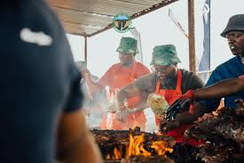
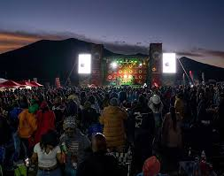

| Date | Time | Activity |
|---|---|---|
| Friday | 09:00 | Opening Ceremony |
| Friday | 10:30 | Cultural Dance Performance |
| Saturday | 12:00 | Braai Festival |
| Saturday | 15:00 | Live Music Performances |
| Sunday | 18:00 | Closing Ceremony |


The festival programme is carefully designed to provide a full day of entertainment and cultural activities for visitors. Each activity is scheduled to ensure that guests experience different aspects of the festival without missing any highlights. From the opening ceremony to the closing performance, the event offers a variety of engaging experiences. Visitors are encouraged to follow the schedule to make the most of their time at the festival.
The schedule includes cultural performances, music shows, and food-related activities that reflect the diversity of the event. Guests can enjoy traditional dances, live music, and interactive experiences throughout the day. The programme also allows time for relaxation and exploration of the surrounding environment. This well-organized schedule ensures that every visitor has a memorable and enjoyable experience.